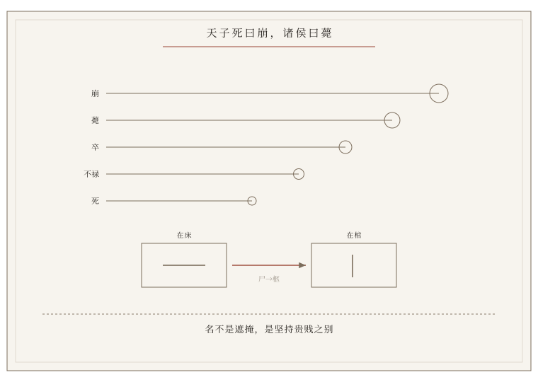

曲礼下 · 二·七十一 · 第 194 课
天子死曰崩，诸侯曰薨，大夫曰卒，士曰不禄，庶人曰死。在床曰尸，在棺曰柩。注「异死名者，为人亵其无知，若犹不同然也」。
说什么事：同一件事的五个名，与死后两个阶段的两种名。
落在哪一层：礼，兼及礼意。论名分至于死。
为何编在此位：上节论祭之名号，此节论死之名号。一生一死，皆以名定分。
【经】天子死曰「崩」，諸侯曰「薨」，大夫曰「卒」，士曰「不祿」，庶人曰「死」。在床曰「屍」，在棺曰「柩」。
【注】異死名者，為人褻其無知，若猶不同然也。自上顛壞曰崩。薨，顛壞之聲。卒，終也。不祿，不終其祿。死之言澌也，精神斯盡也。屍，陳也，言形體在。柩之言究也。
【疏】此一节论死后称谓尊卑不同之事。生时尊卑著见可识，而死荫为野土，嫌若可弃而称轻亵之，故为制尊卑之名，则明其犹有贵贱之异也。「崩」者，坠坏之名，譬若天形坠压然，则四海必睹；古之王者登假也，则率土咸知，故曰崩。「诸侯曰薨」者，薨者，崩之余声也，《诗》云「虫飞薨薨」是声也；诸侯卑，死不得效崩之形，但如崩后之余声。「大夫曰卒」者，卒，毕竟也；大夫是有德之位，仕能至此，亦是毕了平生。「士曰不禄」者，士禄以代耕，而今遂死，是不终其禄。「庶人曰死」者，死者，澌也，澌是消尽无余之目；庶人极贱，生无令誉，死绝余芳，精气一去，身名俱尽。「在床曰尸」者，尸，陈也；古人病困气未绝之时，下置在地，气绝之后，更还床上，陈列在床，故曰尸也。《白虎通》云「失气亡神，形体独陈」是也。「在棺曰柩」者，柩，究也；三日不生，敛之在棺，死事究竟于此也。
崩 颠坏。如天形坠压，四海皆见。
薨 崩之余声。诸侯卑，不能效其形。
卒 毕竟。平生至此而毕。
不禄 不终其禄。士以禄代耕。
死 澌。消尽无余。
尸 陈。形体陈于床。
柩 究。死事究竟于棺。
天子死称「崩」，诸侯称「薨」，大夫称「卒」，士称「不禄」，庶人称「死」。停在床上称「尸」，收在棺中称「柩」。
五等五名，一级一个说法。名不是遮掩，是坚持：人既化为土，礼偏要在称呼上留住贵贱之别。「若犹不同然」五字，把这种固执说得极准。
第一层 为亵其无知 注「为人亵其无知，若犹不同然也」。死则无知，任人轻慢；礼制名以别之，是不甘其被轻慢。
第二层 五名之递 崩是形，薨是声，卒是终，不禄是中断，死是消尽。五个字恰是五种「完」的方式：形坏、声余、事毕、禄绝、气尽。
第三层 知者之广狭 疏「四海必睹」对「知者亦局」。名的高低，还量着这个消息传得多远。天子之死天下知，诸侯之死一国知。
第四层 尸与柩 在床曰尸，在棺曰柩。死后还有两段，各有其名。礼把一个人的最后三日也分了阶段。
与今日何干 讣告上的「逝世」「身亡」「殉职」，仍在分尊卑、分场合。名从来不只是礼貌。
| 左 | 右 |
|---|---|
| 天子死曰崩 | 自上颠坏，四海必睹 |
| 诸侯曰薨 | 崩之余声 |
| 大夫曰卒 | 平生毕了 |
| 士曰不禄 | 不终其禄 |
| 庶人曰死 | 澌，消尽无余 |
| 在床曰尸，在棺曰柩 | 尸，陈也；柩，究也 |
画五道自左端同一竖线起算的横线，长短依次递减，线端各接一枚由大到小的圆（示五等之名，形大声远者在上）。五线之下另画两个小方框并排，左框内画一道横陈的短线（示「在床」），右框内画一道竖立的短线（示「在棺」）；两框之间画一道向右的箭头。不写文字、不画人。赭色只用在最上一道横线及其线端的圆。
